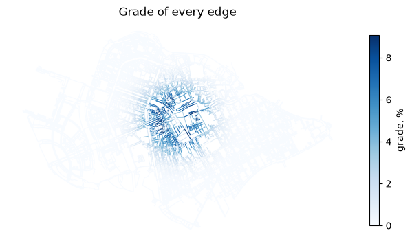
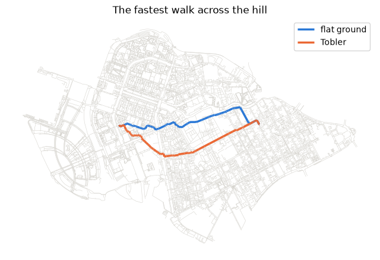
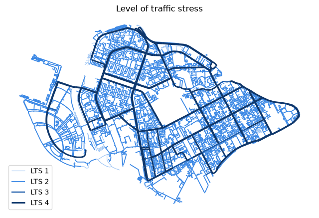

Рельеф и велосипед¶
Этот блокнот добавляет пешеходному графу высоты и уклоны, делает время ходьбы зависящим от уклона и строит велосипедный граф с уровнем транспортного стресса. Обычно высоты берутся из растрового файла (add_elevation(graph, "dem.tif"), для чего нужен pip install "iduedu[elevation]"). Чтобы блокнот работал везде, он использует холм высотой 60 м, заданный функцией от координат; сам Васильевский остров плоский.
# To install IduEdu in a clean environment:
# !pip install IduEdu
OSM_ID = 1114252 # Vasilyevsky Island, Saint Petersburg
import numpy as np
import iduedu
walk = iduedu.get_walk_graph(osm_id=OSM_ID, clip_by_territory=True)
centre = walk.nodes_gdf.geometry.union_all().centroid
def hill(x, y):
"""A hill of 60 m with a radius of about 400 m in the middle of the island."""
return 60 * np.exp(-((x - centre.x) ** 2 + (y - centre.y) ** 2) / (2 * 400**2))
walk = iduedu.add_elevation(walk, hill)
walk.edges_gdf[['length_meter', 'grade', 'grade_max', 'ascent', 'descent']].describe().round(3)
| length_meter | grade | grade_max | ascent | descent | |
|---|---|---|---|---|---|
| count | 29149.000 | 29149.000 | 29149.000 | 29149.000 | 29149.000 |
| mean | 24.902 | 0.000 | 0.006 | 0.087 | 0.075 |
| std | 35.079 | 0.016 | 0.016 | 0.526 | 0.418 |
| min | 0.150 | -0.091 | 0.000 | 0.000 | 0.000 |
| 25% | 6.979 | -0.000 | 0.000 | 0.000 | 0.000 |
| 50% | 14.550 | 0.000 | 0.000 | 0.000 | 0.000 |
| 75% | 29.146 | 0.000 | 0.003 | 0.000 | 0.000 |
| max | 893.976 | 0.091 | 0.091 | 28.820 | 17.560 |
import matplotlib.pyplot as plt
BLUE, ORANGE, AQUA, YELLOW = "#2a78d6", "#eb6834", "#1baf7a", "#eda100"
STREETS = "#d6d4ce"
def basemap(ax, graph, title):
graph.edges_gdf.plot(ax=ax, color=STREETS, linewidth=0.4, zorder=1)
ax.set_title(title)
ax.set_axis_off()
Теперь graph_stats выводит высоты и уклоны. grade_mean — средний уклон по модулю, взвешенный по длине.
iduedu.graph_stats(walk)[['elevation_min', 'elevation_max', 'grade_mean', 'grade_max']].round(3)
elevation_min 0.000
elevation_max 59.940
grade_mean 0.006
grade_max 0.091
Name: value, dtype: float64
fig, ax = plt.subplots(figsize=(8, 6))
walk.edges_gdf.assign(percent=walk.edges_gdf['grade'].abs() * 100).plot(
ax=ax, column='percent', cmap='Blues', legend=True, linewidth=0.8,
legend_kwds={'label': 'grade, %', 'shrink': 0.6},
)
ax.set_title('Grade of every edge')
ax.set_axis_off()
plt.show()

Время ходьбы на склонах¶
apply_grade_speed делит время каждого ребра на относительную скорость модели. Функция пешего хода Тоблера даёт наибольшую скорость на пологом спуске в 5 %. Время по ровному сохраняется в time_min_flat.
hilly = iduedu.apply_grade_speed(walk, 'tobler')
xs, ys = hilly.nodes_gdf.geometry.x, hilly.nodes_gdf.geometry.y
west = ((xs - (centre.x - 1500)) ** 2 + (ys - centre.y) ** 2).idxmin()
east = ((xs - (centre.x + 1500)) ** 2 + (ys - centre.y) ** 2).idxmin()
flat_cost, flat_route = iduedu.shortest_path(hilly, west, east, weight='time_min_flat')
hill_cost, hill_route = iduedu.shortest_path(hilly, west, east, weight='time_min')
print(f'flat ground: {flat_cost:.1f} min, with the hill: {hill_cost:.1f} min')
flat ground: 44.3 min, with the hill: 45.2 min
fig, ax = plt.subplots(figsize=(8, 6))
basemap(ax, hilly, 'The fastest walk across the hill')
hilly.path_to_edges(flat_route, weight='time_min_flat').plot(ax=ax, color=BLUE, linewidth=2.5, label='flat ground')
hilly.path_to_edges(hill_route, weight='time_min').plot(ax=ax, color=ORANGE, linewidth=2.5, label='Tobler')
ax.legend()
plt.show()

Велосипедный граф¶
get_bike_graph сохраняет все пути, доступные велосипеду, и даёт каждому ребру вид велоинфраструктуры (cycle_infra) и уровень транспортного стресса (lts, от 1 до 4). С elevation он также добавляет уклоны и велосипедную модель скорости.
bike = iduedu.get_bike_graph(osm_id=OSM_ID, clip_by_territory=True, elevation=hill)
length = bike.edges_gdf.groupby(['cycle_infra', 'lts'])['length_meter'].sum() / 1000
length.round(1).rename('km').to_frame()
| km | ||
|---|---|---|
| cycle_infra | lts | |
| lane | 3 | 3.8 |
| mixed | 1 | 3.2 |
| 2 | 320.9 | |
| 3 | 2.3 | |
| 4 | 92.6 | |
| track | 1 | 19.0 |
colours = {1: '#9ec5f4', 2: '#3987e5', 3: '#1c5cab', 4: '#0d366b'}
fig, ax = plt.subplots(figsize=(8, 6))
for level, colour in colours.items():
bike.edges_gdf[bike.edges_gdf['lts'] == level].plot(ax=ax, color=colour, linewidth=0.5 + 0.4 * level,
label=f'LTS {level}')
ax.legend(loc='lower left')
ax.set_title('Level of traffic stress')
ax.set_axis_off()
plt.show()

max_lts=2 сохраняет сеть, по которой готово ездить большинство взрослых, а keep_largest_subgraph (по умолчанию) — её наибольшую компоненту сильной связности: часть, где из каждого места можно попасть в любое другое, не выезжая в плотный поток. Сравните её со всеми рёбрами до уровня 2.
low_stress = iduedu.get_bike_graph(osm_id=OSM_ID, clip_by_territory=True, max_lts=2)
pieces = iduedu.get_bike_graph(osm_id=OSM_ID, clip_by_territory=True, max_lts=2, keep_largest_subgraph=False)
def km(graph):
return graph.edges_gdf['length_meter'].sum() / 1000
print(f'all ways: {km(bike):.0f} km, edges up to LTS 2: {km(pieces):.0f} km, '
f'of them connected in both directions: {km(low_stress):.0f} km')
all ways: 442 km, edges up to LTS 2: 356 km, of them connected in both directions: 30 km
Большинство рёбер до уровня 2 здесь — внутриквартальные проезды. Улицы между ними — вторичные и третичные дороги с maxspeed=RU:urban; это не число, поэтому они получают значение по умолчанию для своего класса, 60 км/ч (городское ограничение в России), и уровень 4. Поэтому рёбра с низким стрессом распадаются на много небольших частей: даже без учёта направления наибольшая часть содержит 2 692 из 13 644 узлов. Велополосы, нанесённые на эти улицы, соединили бы их.
Высоты из растра¶
С цифровой моделью рельефа вызов тот же, а растр может быть в любой системе координат:
walk = iduedu.add_elevation(walk, "dem.tif")
walk = iduedu.apply_grade_speed(walk, "tobler")
bike = iduedu.get_bike_graph(osm_id=OSM_ID, elevation="dem.tif")
Глобальные модели, такие как Copernicus GLO-30, в городах измеряют крыши и деревья; для уклонов улиц используйте модель рельефа. Отметки высот и горизонтали в GeoDataFrame тоже подходят (column= называет столбец высоты).
Своя территория¶
Замените OSM_ID на id отношения границы OSM или передайте в territory= полигон shapely в EPSG:4326 или GeoDataFrame. Меры у границы графа смещены, потому что сети за границей нет: стройте граф для большей территории и передавайте исследуемую территорию как area= в graph_stats и centrality. Для многих расчётов по одному региону читайте локальный файл OSM вместо Overpass через iduedu.use_pbf(...) (см. страницу об источниках данных).